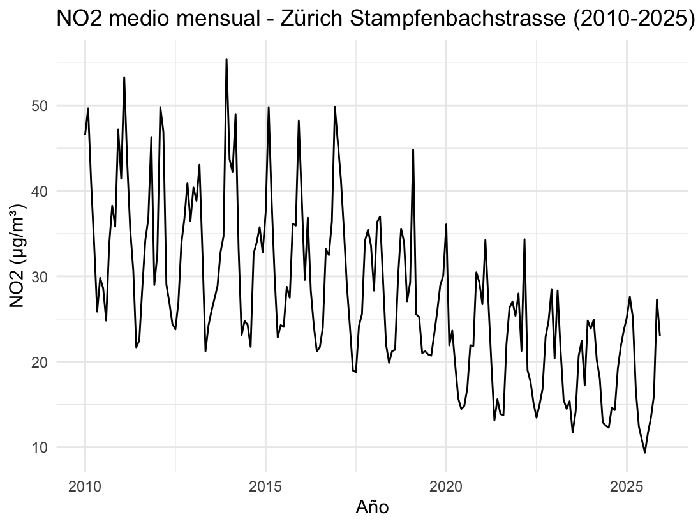
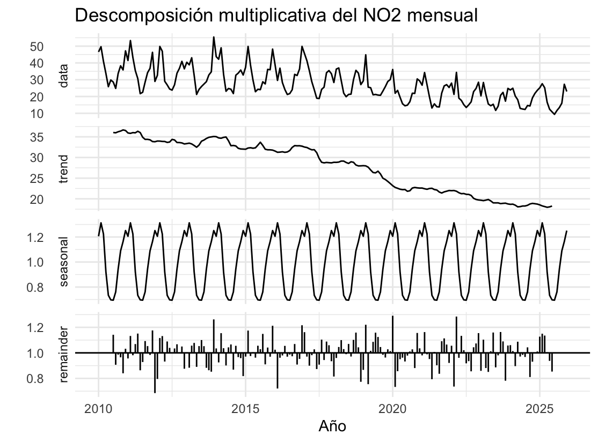
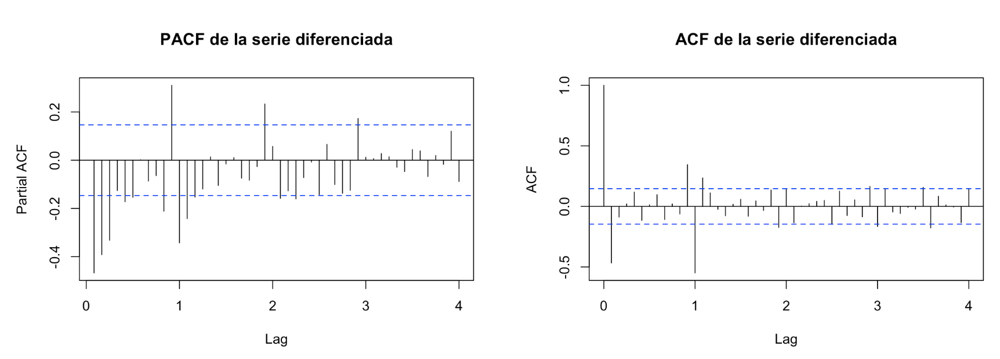
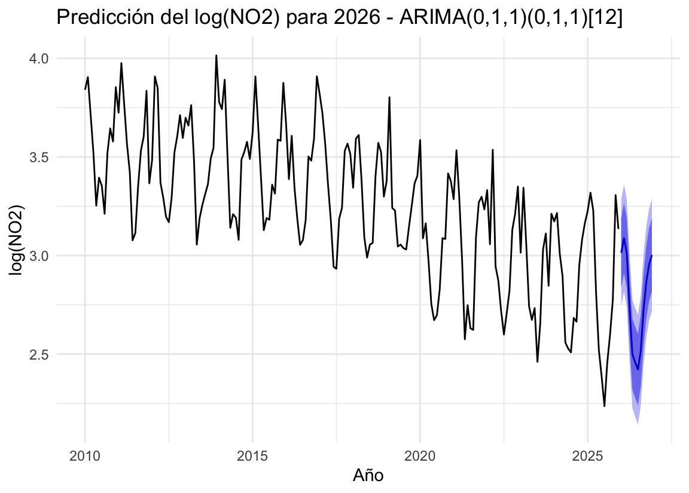

Nitrogen dioxide comes mainly from road traffic and long exposure harms the respiratory system. Swiss law sets limit values that authorities must monitor continuously, so knowing whether pollution keeps falling and which months carry the highest risk is directly useful for air quality policy. The City of Zurich publishes daily air quality measurements as open data, but in a raw long format: 179,450 records mixing four stations and eleven pollutants. Once isolated, the NO₂ series combines a falling trend, a strong annual cycle driven by winter temperature inversions and irregular weather effects. On top of that, the size of the seasonal swings shrinks as the pollution level drops, which rules out the simplest modelling approaches.

I built an end-to-end time series pipeline in R. It downloads 16 years of annual CSV files directly from Zurich's open data portal, filters NO₂ at the Stampfenbachstrasse station and runs quality checks on the 5,844 daily values. I then aggregated them into 192 monthly averages to filter out short-term weather noise while keeping the seasonal pattern.

A correlation of 0.883 between yearly level and variability confirmed that seasonality acts as a percentage of the level, so I applied a multiplicative decomposition to separate trend, seasonality and noise. After a log transformation, ADF and KPSS tests guided one regular and one seasonal difference to make the series stationary.

I identified the model orders manually from the ACF and PACF, which pointed to an ARIMA(0,1,1)(0,1,1)[12], known as the airline model. I trained it on 2010 to 2023 and benchmarked it against two variants, auto.arima and Holt-Winters on the 24 months of 2024 and 2025. Residuals were checked with the Ljung-Box test before refitting the final model on the full series to forecast 2026.
NO₂ at the station fell by 49.7% in 16 years, from 36.25 µg/m³ in 2010 to 18.22 in 2025, with the sharpest drop between 2017 and 2020. Winter levels are almost double summer levels: February sits 31% above the trend while July sits 30% below. The manually identified model beat every alternative on unseen data, with an RMSE of 2.647 µg/m³ and a MAPE of 3.95%, against 2.987 for auto.arima and 3.024 for Holt-Winters. It did so with two parameters instead of five, showing that careful analysis can outperform automatic selection. Its residuals behave as white noise (p = 0.291). The 2026 forecast places the yearly average at 16.5 µg/m³, 9.5% below 2025, with a February peak of 21.9 and a July low of 11.3
